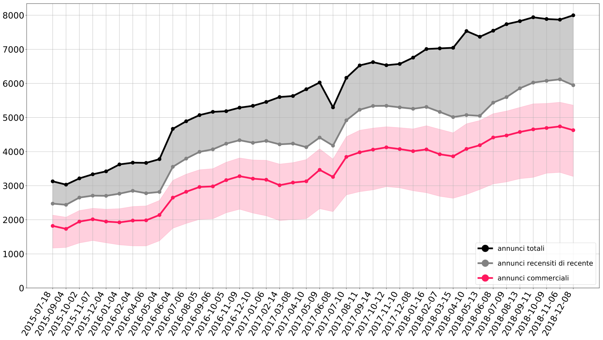
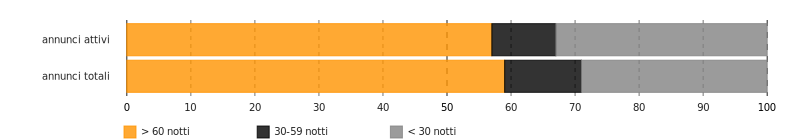
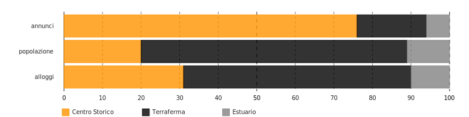
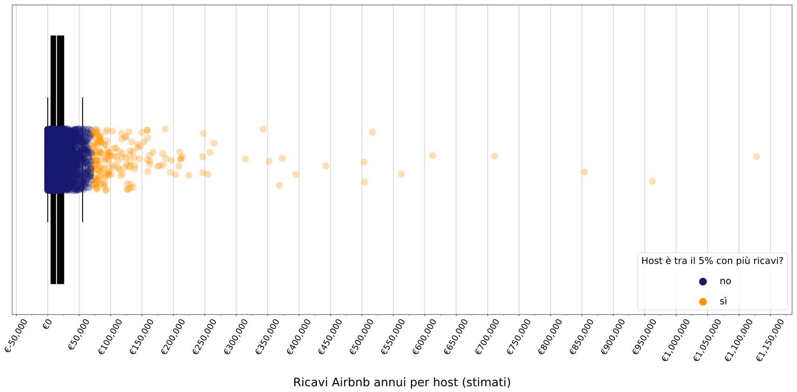
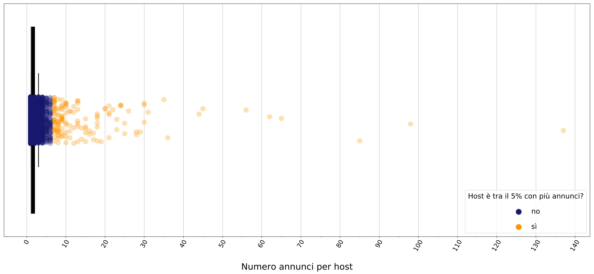

Venice
InsideAirbnb Infokit · 2018-12-08
This short report portrays the latest numbers on Airbnb in Venice. The hope is to provide data-based context to local activists, researchers, policy makers and regular citizens wishing to investigate further the impact of short-term rentals in Venice. At the end of the report, you will find a curated bibliography with precious news items and research that has been written on the matter and methodological notes to better understand the present analysis.
Download PDF
Versione in italiano
Airbnb numbers in Venice
7998 total listings
76% entire home/apartment listings
61% belong to host with multiple listings (multihost)
On 2018-12-08, the city of Venice was home to a total of 7998 Airbnb listings for either rooms or entire apartments. Of all listings, 76% advertise an entire home or apartment, not a room.
Of the total listings, at least 5947 can be considered active, having received a review - and thus a booking - in the last 6 months.
In comparison to population and housing stock, the total number of listings suggests that there are approximately 3 listings every 100 residents in the city, and 5 listings every 100 houses.
Source: InsideAirbnb 
18% more listings than the same month last year As for the overall trend, the number of Airbnb listings in Venice has increased by 1241 listings in comparison to the same month last year (a 18% growth).
59% listings occupied for 60+ nights a year On the basis of the number of reviews a listing has receive and considering an average stay of 2.8 nights (as Airbnb set for Venice), we estimate that 59% of the listings, or 4709 listings, has been booked for more than 60 nights a year. This number can be used as a proxy for the number of houses and rooms that are excluded from the residential housing market, especially because a listing is generally booked for fewer nights than those it has actually been available for.
Source: InsideAirbnb 
San Francisco was one of the first cities to study Airbnb in terms of its impact on the local housing market and to regulate short-term rentals. The 2016 report by the San Francisco Budget Analyst’s Office, meant to assess the compliance of existing regulation, calculates the number of “commercial” listings in the city. In the report, a listing is considered commercial if it has been occupied for more than 58 days a year, in the case of an entire house/apartment, or 88 days a year, in the case of room. The reasoning is that, as Airbnb suggests a 50% occupancy rate, these are listings that are likely run as businesses, available for booking throughout the year, and that are in fact removing housing units from the residential market, given the number of days that they are occupied by tourists. 58% commercial listings If we apply this classification to Venice's listings, 58% are “commercial” listings.
Unequal geographical distribution
The listings are not uniformly distributed across Venice neighbourhoods. The Old Town houses 76% of the total, while only 6% are located in Minor Islands and 18% in Mainland.
Fonti: InsideAirbnb, Anagrafe del Comune di Venezia (popolazione), ISTAT (dati alloggi, censimento 2011) 
In the Old Town of Venice
11 listings every 100 residents
11% of the total housing stock is on AirbnbsThese numbers imply that in the Old Town there are 11 Airbnb listings every 100 residents. This number is 1 for the Minor Islands and 0 for the Mainland. In comparison to the total housing stock, 11% of the houses Old Town is on Airbnb. The houses that are likely removed from the residential market, that is the number of entire home listings occupied for more than 60 nights a year, is 3620 (45% of all listings). Of these, 82% - 2966 homes/listings - in the Old Town alone.
Source: InsideAirbnb

For a comparison, the following maps show the geographical distribution of Airbnb listings in the city, compared to that of number of hospitality businesses (hotels, B&B, vacation houses, etc. officially registered with the Municipality) and of their accommodation capacity.
These maps are useful to understand how the offer Airbnb listings differs from that of official hospitality businesses, both in terms of both quantity (is it similar? lower? higher?) and quality (is it distributed in a similar geographical pattern or not?). Understanding such aspects is a first step to studying the impact of Airbnb for residents and housing, at the local level. For example, if Airbnbs are geographically distributed in the same areas as traditional hotels, then one could argue whether Airbnb is contributing to the “sustainable” tourism it often boasts about. On the other hand, if Airbnb listings concentrate in residential, typically non-touristic areas, then the questions that arise are about what could be the consequences of such presence for the local residents, in terms of neighbourhood dynamics, housing affordability and social coherence.
Not so shared revenue distribution
According to Airbnb, venetian host with a 2-guests entire apartment listings earns on average €1602 per month, or €19224 per year.
InsideAirbnb data seems to confirm a similar value if we consider the median, but they also allow for a more detailed analysis of how revenue and resources are distributed among hosts of Airbnb's “sharing economy”. Such analysis suggests that revenue is not evenly distributed among hosts, but that a minority of them concentrates the majority of both estimated revenue and number of listings, in a not so shared manner.
If we filter on the most recently booked listings, those that have received at least one review in the last 6 months, a hosts median yearly Airbnb revenue is estimated at €17105, and the mean at €26991. €17105 a host's median yearly income from Airbnb alone (estimate)If the listing is an entire apartment, then the estimated yearly revenue is around €13158 (median). For a private room, it's €8553. There are of course difference from neighbourhood to neighbourhood. In the Old Town the median income for an entire house/apartment listings is €14629, while it's €6983 in the Minor Islands and €9868 in the Mainland. It should be noted that these are just very broad estimates based on the price per night and on the estimated number of booked nights (see methodological notes at the bottom of this report). Additionally, the numbers refer only to bookings that occurred though Airbnb, while the same house or room could also be booked through other platforms, like Booking.com.
137 the number of listings managed by the host with most listingsMedian and mean values describe only a part of the phenomenon. The discrepancy between mean and median values suggest that there may be a minority of hosts earning a lot more than other, thus skewing the mean but not the median. The suspect is reinforced when considering that a host has up to €1127666 in estimated revenue, and another one manages 137 listings. Something quite different from the average numbers mentioned before.
On Airbnb, the top 5% hosts for number of listings has 29% of the total number of listings, and the top 5% hosts for estimated revenue accumulate 33% of the total revenue stream generated by Airbnb listings in Venice. The following two graphs try to illustrate this unbalanced power structure: consider that all the small blue dots together represent the bottom 95% of the hosts.
Source: InsideAirbnb

Source: InsideAirbnb

26% hosts controls
61% of the listingsSuch values are possible because, in reality, the platforms allows some hosts to rent dozens and dozens of houses, managing something that, rather than a “home sharing”, rather appears to be a distributed hotel network, with rooms decentralized throughout the city. In fact, 26% of the hosts controls 61% of the listings. The following three maps show the location of the listings belonging to the top three venetian hosts with the highest number of listings.
The follwoing table instead contains details of the top 10 hosts for number of Airbnb listings in Venice alone. After having read their descriptions, how many of them resemble the typical host described by Airbnb, that is a private citizen renting out extra spaces in its house, ffor the sake of the experience of sharing it with its guests?
| Nome | Descrizione Host | Annunci Totali | Annunci per Appartamenti |
|---|---|---|---|
| Faville - Juice | Hello! We are young ladies working at Faville Tours and Juice Glam agencies. We love our city: Venice is unique and magic! Discover our city staying at our apartments located in the heart of Venice. Our purpose?! It's do the best to ensure you a memorable and sspecial stay in Venice! And apart from accommodation, make your stay more comfortable booking with us extra services as parking, private transfers, excursions and guided tour. | 137 | 137 |
| City Apartments | Siamo un'agenzia veneziana formata da un gruppo di persone affiatate che lavorano in squadra per fornire al cliente il massimo dell'ospitalità. Da 2 anni lavoriamo nelle locazioni turistiche e quindi abbiamo parecchia esperienza che mettiamo a disposizione dei nostri clienti. Ci auguriamo di fare sempre meglio e di farvi vivere un'esperienza indimenticabile nella città più bella del mondo. | 98 | 98 |
| Rent It Venice | Property manager Rent it Venice nasce per poter soddisfare la forte richiesta di appartamenti turistici sulla città di Venezia\Mestre. Già specializzati e leader del settore per le affittanze tradizionali con il marchio Planning Pool, abbiamo strutturato una divisione di professionisti che ha come obbiettivo il difficile compito di far trascorrere una indimenticabile vacanza al turista che voglia soggiornare nelle nostre strutture, noi ci occupiamo di tutto, dall’accoglienza alle pulizie fino alla gestione/manutenzione dell’intero alloggio. | 85 | 85 |
| Viewsonvenice | I'm co-founder and director of Views on Venice and I have over 2 years experience in the short and luxury rents market in Veneto. I grew up in the fifteenth-century palace of my family on the Grand Canal, where I live today with my young family. My loves include travel, scuba diving, good wine ... and Venice! Sono co-fondatore e direttore di Views on Venice ed ho un'esperienza di oltre 2 anni nel mercato degli affitti brevi e degli affitti di lusso in Veneto. Sono cresciuto all'interno del palazzo quattrocentesco della mia famiglia sul Canal Grande, dove vivo oggi con la mia giovane famiglia. I miei amori comprendono viaggi, immersioni subacquee, buon vino ... e Venezia! | 65 | 65 |
| Raffaella | Hello everybody, I'm Venetian native and love my beautiful city! Our agency Grimaldi apartments and I It'll be our pleasure to you to be welcomed by people loving and knowing Venice like no one else! We manage many properties and try to be as helpful as possible! We do our best every day in order to satisfy your requests. Let's contact us for further info about our apartments, city itself and curiosities! We look forward to meet you in magical Venice! | 62 | 62 |
| My Ovatta Srl | All properties of Best Venice Apartments are located in the historic center of Venice. The facilities have been adequately restored and the continuous maintenance of our staff allows us to guarantee our clients comfortable and well-finished accommodations. Each apartment is equipped with air conditioning, heating, private bathroom with shower and hairdryer, equipped kitchen, bed linen and towels, welcome kit consisting of Shampoo / Shower - soap. For any doubts or requests, the Staff will be at your disposal from the time of booking and for the duration of your stay. Check-in takes places at the reception desk located in Piazzale Roma at Santa Croce 515 where an experienced and friendly staff will be ready to welcoming you and helping with the registration procedures as well as to offer you all the services available, excursions and visits to numerous sites that Venice offers. The reception is open to the public from 8:3AM to 11:PM (with baggage deposit). After 11:PM Check-In is only made online, and only after sending all the guests ID and paying the balance of the tourist tax.After booking you will be contacted by the staff to find out more about your arrival in Venice and to help you organizing your Check-In together. Given the strong flux from and to the airport, we advise all our customers to request and book the shuttle service that we can provide. In fact this service, agreed with a major transfer company and at an appropriate price, will make you avoid queues to public transport. | 56 | 56 |
| Caroline E Marco | The Red House Company is a property management organization that operate in Venice delivering top quality apartments to international visitor's and tourists that want to experience Venice from a different point of view. Living the town at a citizen level instead of the classic and anonymous Hotel stay. We have registered as a company after one year of web marketing consultancy and we now manage various property in Venice with a high standard service and personal relationship with ll our guests. The Red House manages properties of different owners and we have built a reputation thru our quality and intense attention to details and guest's satisfaction. | 45 | 45 |
| Mirco Optyflat | 44 | 43 | |
| Eugenia | Conosco Venezia come le mie tasche, ho trascorso anche un periodio di studi all'università Ca' Foscari. Adoro cercare appartamenti per i nostri ospiti, ogni porta che si apre cela una sorpresa: corti fiorite, soffitti affrescati, viste mozzafiato che voglio condividere con voi viaggiatori. | 36 | 36 |
| EasySuite | 35 | 35 |
By scrolling through the descriptions, one will realize that some are traditional hospitality businesses, like Bed & Breakfasts: traditional enterprises that have nothing to do with the so-called sharing economy. Other hosts' profiles belong instead to the category of booking managers and real estate businesses, that is professionals that manage the short-term rental of properties for their clients. Such host may not even be venetian at all, if not for the house they rent out to tourists throughout the year. By looking at the descriptions of the hosts, several of them in fact operate all over Italy, or even Europe and worldwide. In fact, such hosts are lending their name to the actual house-owners, adding a layer of complexity and concealing information that could be useful for law enforcement in terms of financial controls and other legal matters. While some of these agencies/hosts are open about their status, other do so covertly. Some hosts, for example, having each of their managed listings refer to a different host, with its own personal name and id, even if then the descriptions of all the managed listings are identical. This way, such hosts cannot even be tallied among the previously mentioned multihost statistics. These multihosts businesses have been accused of being illegal, evading taxes and unfair competition with hotels. Yet criticism cannot be limited solely to such matters, which are larger problems not specifically related to Airbnb. The presence of such hosts on the platform should also be analyzed in terms of its impact in favoring short-term rental rather than long-term residential rental (1) and in terms of unbalanced power dynamics within this “sharing economy”(2).
First of all, the presencs of professional agencies and booking managers makes it easier to rent out to tourists, thus adding an incentive in favor of short-term rentals, by taking care of complex things (legal matters, paper work, reception, etc) that might have otherwise discouraged home-owners. The combination of Airbnb (that favors an immediate match between offer and demand, while also providing warranties in terms of payments) and professional short-term rental agencies (experts in handling all the difficult logistics of short-term rentals) has in fact removed almost all obstacles that might have otherwise driven property owners towards the stability of long-term rentals. To the point that, especially in high-demand unregulated touristic areas, the only thing stopping landlords from converting their properties to short-term rentals is their own moral qualsms.
Secondly, such multihost business concentrate most of the revenue generated (and so are responsible for a large portion of Airbnb's profits, given that the company receives a commission on payments), thus occupying a dominant position in the market. The risk is that such business could, for example, operate to fix prices of the listings, with little external oversight and at the expenses of those private “home sharers” that are at the core of Airbnb's marketing message.
4% revenue share generated by non-commercial hosts.On the light of all of this, it is clear that there are several very different types of hosts on Airbnb, and that the impact of each on the economic and residential dynamics of cities and neighbourhoods will vary quantitatively and qualitatively in relation to this. How many Airbnb hosts are using the platform in a non-professional manner, to rent out a space where they probably also live regularly? According to the latest data, 28% of the hosts are non commercial; these host own 22% and make 4% of the total revenue generated through the platform by listings in Venice.
As the previous charts show, while there are many non-commercial hosts on the platform, they generate a much smaller part of the overall revenue. Airbnb profits from a percentage of hosts' revenue and guest's payments. If it were to allow only non-commercial hosts on Airbnb, it would mean cutting its own profits significantly. In short, Airbnb currently has little incentive to spontaneously remove those professional businesses that incentivize short-term rentals and subtract resources from residential housing. It's up to regulations to make sure this happens.
Bibliography: News and Research
Italian
- Agostini; Ilaria, Firenze. Il turismo consuma il diritto alla casa, La Città Invisibile. (2018)
- Agostini; Ilaria, Firenze. L’espulsione della comunità locale in favore del turismo di lusso e del profitto dei pochi, La Città Invisibile. (2017)
- Arata, Giovanni, Elementi per un framework di regolamentazione degli affitti di breve termine, Medium. (2018)
- Bonaccorsi, Manuele; Di Pietro, Lorenzo, AAA Affittasi Italia, Report (RAI3). (2018)
- Ferrara, Ernesto, Case condivise in centro ma ricavi per pochi: così Airbnb ha invaso l’Italia, Repubblica. (2017)
- Fontana, Giorgio, La variabile discriminazione nell’algoritmo di Airbnb, Pagina99. (2016)
- Griswold, Alison, Airbnb non è più l’amico della classe media, Internazionale. (2017)
- Picascia, Stefano; Romano, Antonello; Teobaldi, Michela, The Airification of Cities, LADEST · Università di Siena. (2017)
International
- Barron, Kyle; Kung, Edward; Proserpio Davide, The Sharing Economy and Housing Affordability: Evidence from Airbnb, NBER - UCLA - USC. (2018)
- Boone, Alastair, There's New Research Behind the Contention that Airbnb Raises Rents, CityLab / The Atlantic. (2017)
- Gurran, Nicole; Phibbs, Peter, When Tourists Move In: How Should Urban Planners Respond to Airbnb?, Journal of the American Planning Association · Routledge. (2017)
- Hill, Steven, The Unsavory Side of Airbnb , The American Prospect. (2015)
- Jamasi, Zohra, Regulating Airbnb and the Short-Term Rental Market. An overview of North American regulatory frameworks, CCPA. (2017)
- Lee, Danye, How Airbnb Short-Term Rentals Exacerbate Los Angeles’s Affordable Housing Crisis: Analysis and Policy Recommendation, Harvard Law & Policy Review. (2016)
- Merante, Mark; Mertens Horn, Keren, Is Home Sharing Driving up Rents? Evidence from Airbnb in Boston, UMass Boston. (2016)
- Samaan, Roy, Airbnb, rising rent and the housing crisis in Los Angeles , LAANE. (2015)
- San Francisco Budget and Legislative Analyst’s Office, Analysis of the impact of short-term rentals on housing, City of San Francisco. (2015)
- Wachsmuth, David; Chaney, David; Kerrigan, Danielle; Shillolo, Andrea; Basalaev-Binder, Robin; , The High Cost of Short-Term Rentals in New York City, Urban Politics and Governance research group · McGill University. (2018)
Methodological Notes
The raw data used for this analysis is the data you can freely download from InsideAirbnb's "Get the data"section. The dataset contains data on listings and hosts, on prices and reviews, on approximate location, etc. The data might not be perfect. For example, there is no way to know exactly for how many nights the listings have actually been booked; in what periods of the year; how long they are available for even if they don't get any booking. There's no way of being sure if a listings is in fact inactive or simply isn't getting reviewed. There is no way who is the actual owner of the listed property and if listings with different host profile names actually belong to different people. In fact, even the location (and so the neighbourhood assigned to a listing) might be off by a random distance (estimated between 0-150m), so that listings in the same building might actually get mapped in different streets and possibly neighbourhoods. Once again, we can only make estimates which could either understate or overstate the phenomenon.
The following paragraphs are an attempt to illustrate in detail the types of calculations and choices behind this report. The core idea is to allow readers to understand the limits and critical aspects of the analysis, suggest improvements, create a debate around the data and possibly replicate it for other cities.
- Estimating a listing's occupancy.. In its report, Airbnb states that 2.8 nights is the length of an average stay in Venice. For each listings, InsideAirbnb data has information extracted from its public profile with variables that refer to: average number of reviews per month; minimum number of nights per booking. Starting from the average number of monthly reviews, in this analysis we estimated the number of bookings according to three scenarios:
- Minimal impact scenario: All of the guests have left a review after their stay. In this scenario, the number of monthly reviews corresponds to the number of monthly bookings. In the previous chart "Growth of Airbnb listings through time", the lower margin of the magenta band corresponds to the number of listings that would be considered commercial according to this scenario. In the chart "Revenue and listings distribution among non-commercial hosts", this scenario is represented by the upper margin of the orange band, which stands for the number of listings and hosts that would be considered non-commercial, and their revenue, according to this scenario.
- Main scenario: Half (50%) of the guests have left a review after their stay. We thus multiplied the number of monthly reviews by 2, to get the number of bookings. This is the default scenario used in the report and in the charts, unless otherwise stated. The reasons supporting this scenario are well illustrated in InsideAirbnb's about page
- High impact scenario: Only 30.5% of the guest leave a review, so the number of monthly reviews is multiplied by 3.28 to calculate the number of bookings. This value has been chosen because it is the rate used in the report by the San Francisco Budget Analyst’s Office for their high impact scenario. In the previous chart "Growth of Airbnb listings through time", the upper margin of the magenta band corresponds to the number of listings that would be considered commercial according to this scenario. In the chart "Revenue and listings distribution among non-commercial hosts", this scenario is represented by the lower margin of the orange band, which stands for the number of listings and hosts that would be considered non-commercial, and their revenue, according to this scenario.
- If the listings requires booking for a minimum number that is below 2.8 (the average length of a stay according to Airbnb'sVenice report):
(number of yearly bookings * 2.8)
- Id the minimum number of nights is higher than 2.8:
(number of yearly bookings * listings' minimum nights)Please note that Airbnb doesn't release exact information about average stays in all cities. If such information could be retrieved from an official source, we used their number. Otherwise we assumed an average stay of 3.6 nights - what Airbnb declared was the average stay in Italy in 2017. Finally, the occupancy has been capped at 70% (255 days a year), in line with InsideAirbnb's methodology elsewhere, to balance for cases in which a host has temporarily changed the number of minimum nights (for example in high-season). This is a conservative measure that could underestimate actual occupancy in many cases.
number of booked nights a year * price per nightNote that the prices in the original dataset are in $ and have been converted to € using the exchange rate of €1.00 = $0.86 (rate retrieved on 03/08/2018)
| localita | quartiere | municipalita | gruppo | gruppo-numero |
|---|---|---|---|---|
| Cannaregio | S.Marco-Castello-S.Elena-Cannaregio | Venezia-Murano-Burano | Centro Storico | 1 |
| Castello | S.Marco-Castello-S.Elena-Cannaregio | Venezia-Murano-Burano | Centro Storico | 1 |
| Dorsoduro | Dorsoduro-S.Polo-S.Croce-Giudecca | Venezia-Murano-Burano | Centro Storico | 1 |
| Giudecca | Dorsoduro-S.Polo-S.Croce-Giudecca | Venezia-Murano-Burano | Centro Storico | 1 |
| Isola Campalto | S.Marco-Castello-S.Elena-Cannaregio | Venezia-Murano-Burano | Centro Storico | 1 |
| Isola La Grazia | S.Marco-Castello-S.Elena-Cannaregio | Venezia-Murano-Burano | Centro Storico | 1 |
| Isola Sacca Sessola | S.Marco-Castello-S.Elena-Cannaregio | Venezia-Murano-Burano | Centro Storico | 1 |
| Isola San Clemente | S.Marco-Castello-S.Elena-Cannaregio | Venezia-Murano-Burano | Centro Storico | 1 |
| Isola San Giorgio | S.Marco-Castello-S.Elena-Cannaregio | Venezia-Murano-Burano | Centro Storico | 1 |
| Isola San Giorgio in Alga | Dorsoduro-S.Polo-S.Croce-Giudecca | Venezia-Murano-Burano | Centro Storico | 1 |
| Isola San Michele | S.Marco-Castello-S.Elena-Cannaregio | Venezia-Murano-Burano | Centro Storico | 1 |
| Isola San Secondo | S.Marco-Castello-S.Elena-Cannaregio | Venezia-Murano-Burano | Centro Storico | 1 |
| Isola San Servolo | S.Marco-Castello-S.Elena-Cannaregio | Venezia-Murano-Burano | Centro Storico | 1 |
| Isola delle Tresse | Dorsoduro-S.Polo-S.Croce-Giudecca | Venezia-Murano-Burano | Centro Storico | 1 |
| Isola ex Forte S.Angelo della Polve | Dorsoduro-S.Polo-S.Croce-Giudecca | Venezia-Murano-Burano | Centro Storico | 1 |
| Laguna Veneta (M.1 - Q.1) | S.Marco-Castello-S.Elena-Cannaregio | Venezia-Murano-Burano | Centro Storico | 1 |
| Laguna Veneta (M.1 - Q.2) | Dorsoduro-S.Polo-S.Croce-Giudecca | Venezia-Murano-Burano | Centro Storico | 1 |
| Sacca Fisola | Dorsoduro-S.Polo-S.Croce-Giudecca | Venezia-Murano-Burano | Centro Storico | 1 |
| Sacca San Biagio | Dorsoduro-S.Polo-S.Croce-Giudecca | Venezia-Murano-Burano | Centro Storico | 1 |
| San Marco | S.Marco-Castello-S.Elena-Cannaregio | Venezia-Murano-Burano | Centro Storico | 1 |
| San Polo | Dorsoduro-S.Polo-S.Croce-Giudecca | Venezia-Murano-Burano | Centro Storico | 1 |
| Sant'Elena | S.Marco-Castello-S.Elena-Cannaregio | Venezia-Murano-Burano | Centro Storico | 1 |
| Santa Croce | Dorsoduro-S.Polo-S.Croce-Giudecca | Venezia-Murano-Burano | Centro Storico | 1 |
| Tronchetto | Dorsoduro-S.Polo-S.Croce-Giudecca | Venezia-Murano-Burano | Centro Storico | 1 |
| Alberoni | Lido-Malamocco-Alberoni | Lido-Pellestrina | Estuario | 2 |
| Isola Lazzaretto vecchio | Lido-Malamocco-Alberoni | Lido-Pellestrina | Estuario | 2 |
| Isola Ottagono Alberoni | Lido-Malamocco-Alberoni | Lido-Pellestrina | Estuario | 2 |
| Isola Ottagono San Pietro | S.Pietro in Volta-Pellestrina | Lido-Pellestrina | Estuario | 2 |
| Isola Ottagono di Ca' Roman | S.Pietro in Volta-Pellestrina | Lido-Pellestrina | Estuario | 2 |
| Isola Poveglia | Lido-Malamocco-Alberoni | Lido-Pellestrina | Estuario | 2 |
| Isola San Lazzaro degli Armeni | Lido-Malamocco-Alberoni | Lido-Pellestrina | Estuario | 2 |
| Isola Santo Spirito | Lido-Malamocco-Alberoni | Lido-Pellestrina | Estuario | 2 |
| Isola ex Batteria Fisolo | Lido-Malamocco-Alberoni | Lido-Pellestrina | Estuario | 2 |
| Laguna Veneta (M.2 - Q.3) | Lido-Malamocco-Alberoni | Lido-Pellestrina | Estuario | 2 |
| Laguna Veneta (M.2 - Q.4) | S.Pietro in Volta-Pellestrina | Lido-Pellestrina | Estuario | 2 |
| Lido | Lido-Malamocco-Alberoni | Lido-Pellestrina | Estuario | 2 |
| Malamocco | Lido-Malamocco-Alberoni | Lido-Pellestrina | Estuario | 2 |
| Pellestrina | S.Pietro in Volta-Pellestrina | Lido-Pellestrina | Estuario | 2 |
| San Pietro in Volta | S.Pietro in Volta-Pellestrina | Lido-Pellestrina | Estuario | 2 |
| Santa Maria del Mare | S.Pietro in Volta-Pellestrina | Lido-Pellestrina | Estuario | 2 |
| aree non altrove classificate (M-2 | S.Pietro in Volta-Pellestrina | Lido-Pellestrina | Estuario | 2 |
| Burano | Burano-Mazzorbo-Torcello | Venezia-Murano-Burano | Estuario | 2 |
| Isola Buel del Lovo | Burano-Mazzorbo-Torcello | Venezia-Murano-Burano | Estuario | 2 |
| Isola Carbonera | Murano-S.Erasmo | Venezia-Murano-Burano | Estuario | 2 |
| Isola Cason Grassabo' | Burano-Mazzorbo-Torcello | Venezia-Murano-Burano | Estuario | 2 |
| Isola Cason vecchio di Grassabo' | Burano-Mazzorbo-Torcello | Venezia-Murano-Burano | Estuario | 2 |
| Isola La Cura | Burano-Mazzorbo-Torcello | Venezia-Murano-Burano | Estuario | 2 |
| Isola La Salina | Burano-Mazzorbo-Torcello | Venezia-Murano-Burano | Estuario | 2 |
| Isola Madonna del Monte | Burano-Mazzorbo-Torcello | Venezia-Murano-Burano | Estuario | 2 |
| Isola Peschieretta della Granzona | Burano-Mazzorbo-Torcello | Venezia-Murano-Burano | Estuario | 2 |
| Isola San Francesco del Deserto | Burano-Mazzorbo-Torcello | Venezia-Murano-Burano | Estuario | 2 |
| Isola San Giacomo in Paludo | Murano-S.Erasmo | Venezia-Murano-Burano | Estuario | 2 |
| Isola Santa Cristina | Burano-Mazzorbo-Torcello | Venezia-Murano-Burano | Estuario | 2 |
| Isola di Tessera | Murano-S.Erasmo | Venezia-Murano-Burano | Estuario | 2 |
| Isola ex Ridotto di Crevan | Murano-S.Erasmo | Venezia-Murano-Burano | Estuario | 2 |
| Laguna Veneta (M.1 - Q.5) | Murano-S.Erasmo | Venezia-Murano-Burano | Estuario | 2 |
| Laguna Veneta (M.1 - Q.6) | Burano-Mazzorbo-Torcello | Venezia-Murano-Burano | Estuario | 2 |
| Lazzaretto Nuovo | Murano-S.Erasmo | Venezia-Murano-Burano | Estuario | 2 |
| Mazzorbetto | Burano-Mazzorbo-Torcello | Venezia-Murano-Burano | Estuario | 2 |
| Mazzorbo | Burano-Mazzorbo-Torcello | Venezia-Murano-Burano | Estuario | 2 |
| Murano | Murano-S.Erasmo | Venezia-Murano-Burano | Estuario | 2 |
| Sant'Erasmo | Murano-S.Erasmo | Venezia-Murano-Burano | Estuario | 2 |
| Torcello | Burano-Mazzorbo-Torcello | Venezia-Murano-Burano | Estuario | 2 |
| Vignole | Murano-S.Erasmo | Venezia-Murano-Burano | Estuario | 2 |
| Asseggiano | Chirignago-Gazzera | Chirignago-Zelarino | Terraferma | 3 |
| Capitello | Zelarino-Cipressina-Trivignano | Chirignago-Zelarino | Terraferma | 3 |
| Case Dosa | Chirignago-Gazzera | Chirignago-Zelarino | Terraferma | 3 |
| Chirignago | Chirignago-Gazzera | Chirignago-Zelarino | Terraferma | 3 |
| Cipressina | Zelarino-Cipressina-Trivignano | Chirignago-Zelarino | Terraferma | 3 |
| Ferrarese | Chirignago-Gazzera | Chirignago-Zelarino | Terraferma | 3 |
| Gatta - Bonduà | Zelarino-Cipressina-Trivignano | Chirignago-Zelarino | Terraferma | 3 |
| Gazzera | Chirignago-Gazzera | Chirignago-Zelarino | Terraferma | 3 |
| Macello | Chirignago-Gazzera | Chirignago-Zelarino | Terraferma | 3 |
| Maguolo | Zelarino-Cipressina-Trivignano | Chirignago-Zelarino | Terraferma | 3 |
| Marocco Zelarino | Zelarino-Cipressina-Trivignano | Chirignago-Zelarino | Terraferma | 3 |
| Molino Ronchin | Zelarino-Cipressina-Trivignano | Chirignago-Zelarino | Terraferma | 3 |
| Santa Barbara | Chirignago-Gazzera | Chirignago-Zelarino | Terraferma | 3 |
| Sardi (M.5 - Q.12) | Chirignago-Gazzera | Chirignago-Zelarino | Terraferma | 3 |
| Sardi (M.5 - Q11) | Zelarino-Cipressina-Trivignano | Chirignago-Zelarino | Terraferma | 3 |
| Scaramuzza | Zelarino-Cipressina-Trivignano | Chirignago-Zelarino | Terraferma | 3 |
| Taru' | Zelarino-Cipressina-Trivignano | Chirignago-Zelarino | Terraferma | 3 |
| Trivignano | Zelarino-Cipressina-Trivignano | Chirignago-Zelarino | Terraferma | 3 |
| Zelarino | Zelarino-Cipressina-Trivignano | Chirignago-Zelarino | Terraferma | 3 |
| aree non altrove classificate (M.5 | Chirignago-Gazzera | Chirignago-Zelarino | Terraferma | 3 |
| aree non altrove classificate (M.5 | Zelarino-Cipressina-Trivignano | Chirignago-Zelarino | Terraferma | 3 |
| Aeroporto | Favaro-Campalto | Favaro-Veneto | Terraferma | 3 |
| Ca' Solaro | Favaro-Campalto | Favaro-Veneto | Terraferma | 3 |
| Campalto | Favaro-Campalto | Favaro-Veneto | Terraferma | 3 |
| Campalto Bagaron | Favaro-Campalto | Favaro-Veneto | Terraferma | 3 |
| Campalto CEP | Favaro-Campalto | Favaro-Veneto | Terraferma | 3 |
| Campalto Cimitero | Favaro-Campalto | Favaro-Veneto | Terraferma | 3 |
| Campalto Gobbi | Favaro-Campalto | Favaro-Veneto | Terraferma | 3 |
| Dese | Favaro-Campalto | Favaro-Veneto | Terraferma | 3 |
| Favaro | Favaro-Campalto | Favaro-Veneto | Terraferma | 3 |
| Favaro Cimitero | Favaro-Campalto | Favaro-Veneto | Terraferma | 3 |
| Favaro Col San Martino | Favaro-Campalto | Favaro-Veneto | Terraferma | 3 |
| Laguna Veneta (M.3 - Q.8) | Favaro-Campalto | Favaro-Veneto | Terraferma | 3 |
| Tessera | Favaro-Campalto | Favaro-Veneto | Terraferma | 3 |
| Torre Antica | Favaro-Campalto | Favaro-Veneto | Terraferma | 3 |
| aree non altrove classificate (M.3 | Favaro-Campalto | Favaro-Veneto | Terraferma | 3 |
| Ca' Brentelle | Marghera-Catene-Malcontenta | Marghera | Terraferma | 3 |
| Ca' Emiliani | Marghera-Catene-Malcontenta | Marghera | Terraferma | 3 |
| Ca' Sabbioni | Marghera-Catene-Malcontenta | Marghera | Terraferma | 3 |
| Centro Commerciale Panorama | Marghera-Catene-Malcontenta | Marghera | Terraferma | 3 |
| Malcontenta | Marghera-Catene-Malcontenta | Marghera | Terraferma | 3 |
| Marghera | Marghera-Catene-Malcontenta | Marghera | Terraferma | 3 |
| Marghera Catene | Marghera-Catene-Malcontenta | Marghera | Terraferma | 3 |
| Marghera Zona Industriale | Marghera-Catene-Malcontenta | Marghera | Terraferma | 3 |
| Villabona | Marghera-Catene-Malcontenta | Marghera | Terraferma | 3 |
| aree non altrove classificate (M.6 | Marghera-Catene-Malcontenta | Marghera | Terraferma | 3 |
| Altobello | Mestre Centro | Mestre-Carpenedo | Terraferma | 3 |
| Bissuola | Carpenedo-Bissuola | Mestre-Carpenedo | Terraferma | 3 |
| Borgo Pezzana | Mestre Centro | Mestre-Carpenedo | Terraferma | 3 |
| Borgoforte | Carpenedo-Bissuola | Mestre-Carpenedo | Terraferma | 3 |
| Carpenedo | Carpenedo-Bissuola | Mestre-Carpenedo | Terraferma | 3 |
| Centro Commerciale Auchan | Mestre Centro | Mestre-Carpenedo | Terraferma | 3 |
| Giustizia | Mestre Centro | Mestre-Carpenedo | Terraferma | 3 |
| La Favorita | Mestre Centro | Mestre-Carpenedo | Terraferma | 3 |
| Marocco Terraglio | Mestre Centro | Mestre-Carpenedo | Terraferma | 3 |
| Piave 1860 | Mestre Centro | Mestre-Carpenedo | Terraferma | 3 |
| Pra' Secco | Carpenedo-Bissuola | Mestre-Carpenedo | Terraferma | 3 |
| Quartiere Pertini | Carpenedo-Bissuola | Mestre-Carpenedo | Terraferma | 3 |
| San Lorenzo XXV Aprile | Mestre Centro | Mestre-Carpenedo | Terraferma | 3 |
| Villaggio San Marco | Mestre Centro | Mestre-Carpenedo | Terraferma | 3 |
| Villaggio Sartori | Carpenedo-Bissuola | Mestre-Carpenedo | Terraferma | 3 |
| Zona Commerciale via Torino | Mestre Centro | Mestre-Carpenedo | Terraferma | 3 |
| aree non altrove classificate (M.4 | Carpenedo-Bissuola | Mestre-Carpenedo | Terraferma | 3 |
| aree non altrove classificate (M.4 | Mestre Centro | Mestre-Carpenedo | Terraferma | 3 |